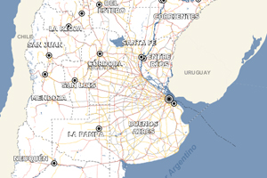
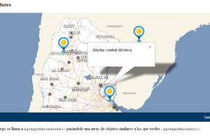
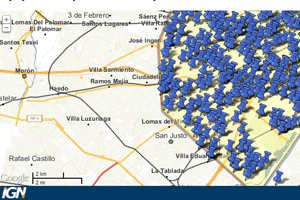

Ejemplos simples
-

Un mapa básico
En este ejemplo se crea un mapa simple con la configuración predeterminada.
-

Modificando el centro del mapa
En este ejemplo se centra el mapa en coordenadas específicas.
-

Cambiando el nivel de zoom
En este ejemplo se modifica la vista del mapa cambiando el nivel de zoom.
-

Vista satelital
En este ejemplo se alterna la capa base del mapa a la vista satelital. Se aprecian los topónimos reconocidos por el IGN sobre las imágenes de Google Maps.
Ejemplos con marcadores
-

Un mapa con un marcador en el centro
En este ejemplo se crea un marcador en el centro del mapa.
-

-

Un mapa con varios marcadores a la vez
En este ejemplo se crean varios marcadores a partir de una array de objetos javascript.
Visualización de datos online
-

-

Visualizar un archivo KML publicado en la web
En este ejemplo se superpone una capa KML sobre el mapa.
-
Leer un XML para extraer y ubicar marcadores
En este ejemplo se lee un archivo XML y se genera un array de objetos javascript.
Integración con Google Maps
-

Reemplazar un mapa estándar de Google Maps por argenmap
En este ejemplo se muestra una app que muestra datos de elevación originalmente creada con un mapa de Google. El ejemplo reemplaza fácilmente el mapa estándar de Google por argenmap.